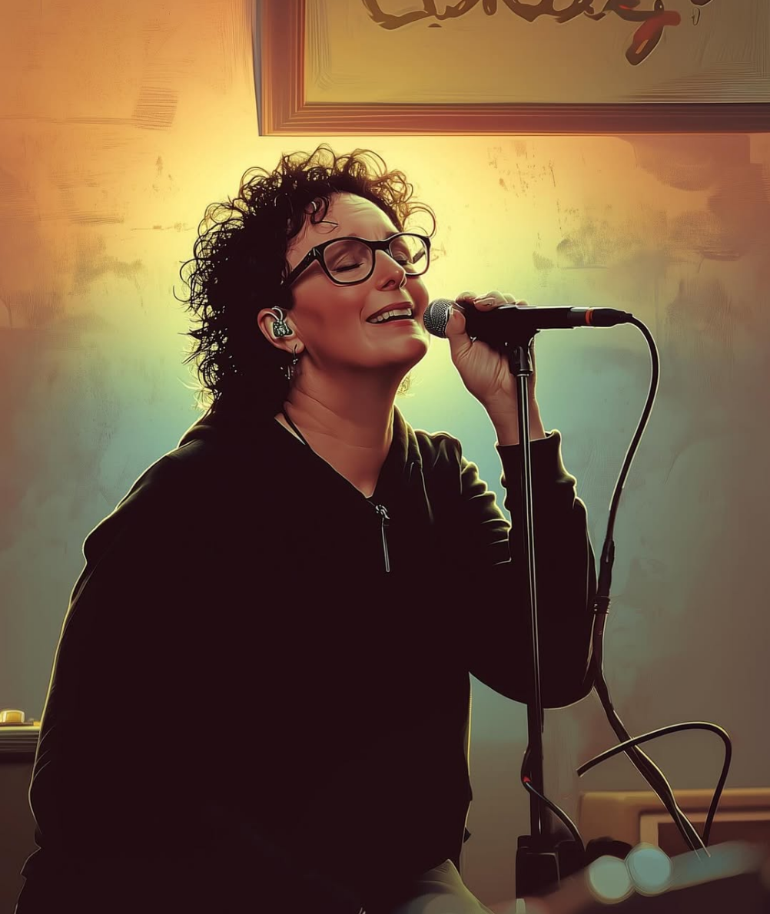
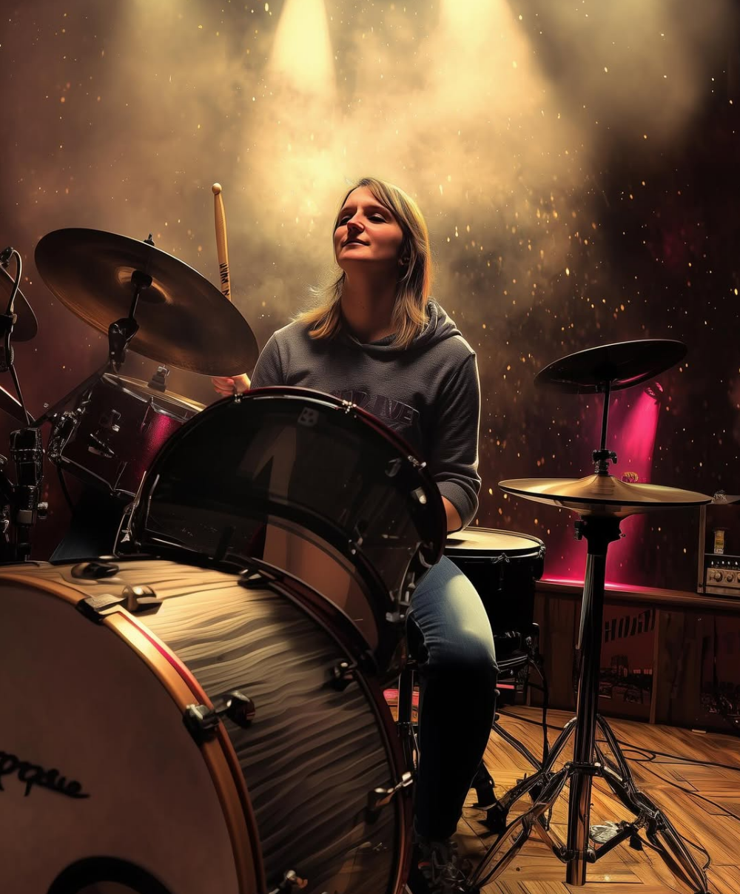
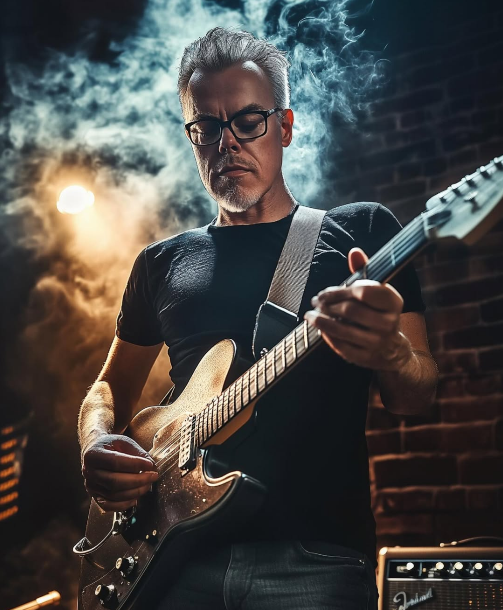
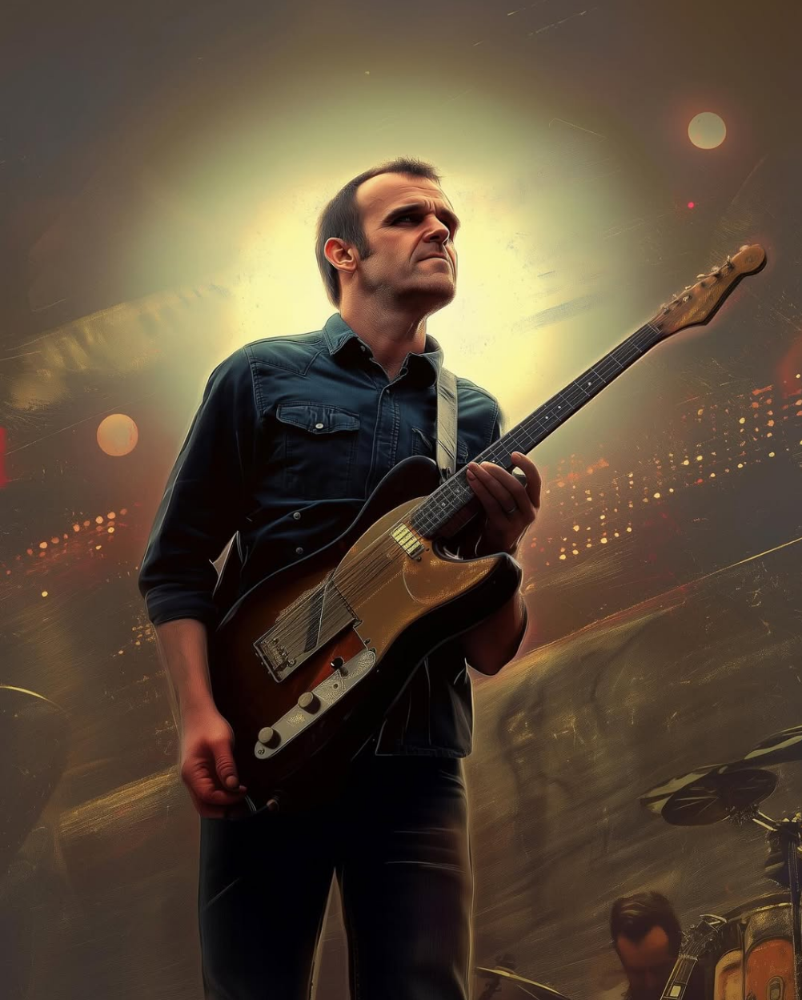
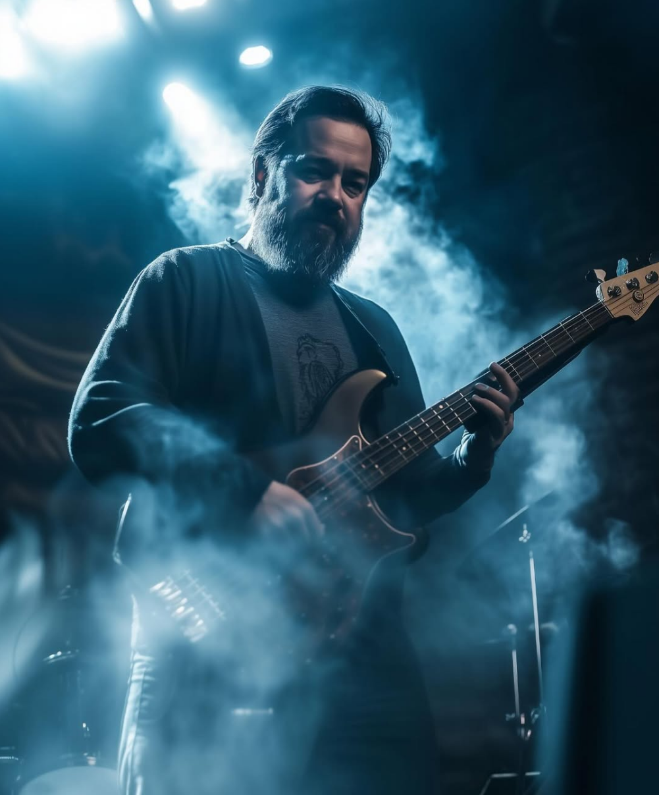

Razors Cry
Rock Covers
Razor-scherpe riffs, donderende grooves en pure podiumenergie. Razors Cry brengt high-voltage rockcovers met een set die hard binnenkomt vanaf het eerste akkoord tot het laatste toegift.
Bandleden

Jolanda — Vocals
Hallo daar, rock ‘n’ roll liefhebbers! Ik ben Jolanda, het gezicht van Razor’s Cry en de vrouw die zowel een Harley Davidson kan berijden als een chihuahua kan knuffelen zonder mijn stoere imago te verliezen. Ja, je hoort het goed: ik ben de zangeres die van Volbeat tot Death by Rock and Roll gaat, en die tegelijkertijd thuis op de bank ligt met mijn twee mini-wolven, die denken dat ze pitbulls zijn.
Mijn leven is een perfecte mix van leer, laarzen, en lieve hondenhartjes. Op het podium ben ik de queen van de moshpit, maar thuis ben ik de koningin van de knuffelsessies. Als ik niet bezig ben om de speakers te laten trillen met mijn stem, dan trillen ze wel van het geblaf van mijn chihuahuas die denken dat ze mijn back-upzangers zijn.
Dus, of je nu komt voor de headbangs, de gitaarriffs, of gewoon om te zien hoe ik mijn Harley parkeer zonder mijn chihuahuas wakker te maken, bij Razor’s Cry ben je aan het juiste adres. Laten we de boel opblazen, mensen! 🤘🐾

Cynthia — Drums
Hoi allemaal! Ik ben Cynthia, “aanwezig” in de band voor het ritmische gedeelte. Begon mijn muzikale reis met een gitaar in de hand en een droom in het hoofd: de volgende Jimi Hendrix worden. Helaas bleek het talent voor gitaarsolo’s net zo sterk als het geduld voor snaarstemmingen—dus niet bestaand. Na talloze gefrustreerde sessies waarin ik meer snaren brak dan riffs speelde, toch maar besloten dat zes snaren gewoon te veel verantwoordelijkheid waren.
Als drumster van de ruige rockband Razor’s Cry ram ik nu op de drums met de energie van een hyperactieve octopus op cafeïne. Mijn beukende ritmes en onnavolgbare fills zorgen ervoor dat zelfs de meest doorgewinterde headbangers hun nekspieren verrekken.
Mijn motto? “Als je niet spelen kan, gewoon hard slaan. Dat werkt bij mij ook”
Met mijn ontembare energie en gevoel voor ritme ben ik niet alleen het kloppende hart van Razor’s Cry, maar ook de reden dat geen enkele drumkit het langer dan drie maanden overleeft. Rock-‘n-roll in zijn puurste vorm!

Nils — Guitar
Hallo allemaal, ik ben Nils, jullie nieuwe gitarist en officiële reden waarom de buren straks klagen over ‘gehuil’… Razor’s Cry, toch? Ik dacht eerst dat dat verwees naar het geluid van mijn gitaar na een avondje bourbon en powerchords. Maar goed: ik ben hier om jullie riffs scherper te maken dan een scheermes en jullie solos te laten huilen van jaloezie.
Mijn inspiratie? Stel je voor dat Prince en Lenny Kravitz stiekem een kind hadden… en dat kind vervolgens opgevoed werd door een luidruchtige stofzuiger. Mijn gitaarspel is een mix tussen ‘Purple Rain’ en ‘Are You Gonna Go My Way’, maar dan gespeeld door iemand die af en toe vergeet waar de mute-knop zit.
Fun fact: ik heb ooit een Fender Strat gesloopt tijdens een poging om ‘Kiss’ nog funkyer te coveren. Spoiler: de gitaar overleefde het, mijn ego niet. Maar maak je geen zorgen – ik beloof dat ik alleen feedback geef waar jullie letterlijk om vragen.
Kortom: ik breng vurige solo’s, funky licks en de garantie dat onze repetities nooit saai worden. Tenzij jullie een hekel hebben aan lachende drummers en gitaarpicks die overal belanden behalve in mijn hand. Laten we razend worden… maar wel op toon, natuurlijk.” 🎸

Tom — Guitar
Hallo allemaal, ik ben Tom, een van de gitaristen van Razor’s Cry! En ja, ik ben die gast die zijn Gibson- en Fender-gitaren met trots bespeelt, maar zijn dure effectpedalen vervoert in een plastic Netto-tasje. Want waarom zou je honderden euro’s uitgeven aan een fancy pedalboard als je ook gewoon een tasje kunt gebruiken dat eigenlijk bedoeld is voor een sixpack bier en een zak chips?
Mijn band, Razor’s Cry, is vernoemd naar het geluid dat mijn bandgenoten maken als ik weer eens een nieuwe pedal koop en ze vragen: “Tom, heb je die echt nodig?” Natuurlijk heb ik die nodig! Hoe anders moet ik dat ene rare geluid maken dat ik één keer gebruik in het derde refrein van ons minst populaire nummer?
Dus ja, verwacht vanavond een mix van stevige riffs, melodieuze solo’s en het geritsel van een Netto-tasje terwijl ik wanhopig probeer de juiste pedal te vinden. Laten we rocken, en onthoud: het is geen gitaarverzamelwoede, het is een levensstijl! 🎸

Peter — Bass
Ik ben Peter, de man die stiekem denkt dat hij de backbone van de band is, maar in werkelijkheid ben ik gewoon de prutser op de vier snaar. Ja, ik ben degene die hopeloos verdwaalt tussen de noten, terwijl ik probeer te doen alsof ik weet wat ik doe. Ze noemen me ook wel de Low Tone Peerke, de Bassmaster 3000, of gewoon... die gast die altijd te hard staat.
Mijn basgitaar is mijn trots, mijn vriend, en soms mijn ergste vijand. Want laten we eerlijk zijn: als ik een noot mis, noemt niemand het... maar als ik raak speel, hoor je het ook niet. Toch blijf ik doorgaan, want zonder mij zouden deze rockhelden klinken als een karaoke-avond zonder bier.
Dus, zet je schrap voor een avond vol powerchords, gillende gitaren, en natuurlijk... mijn epische baslijnen. Of, zoals ik het noem: “de trillingen die je voelt, maar niet altijd hoort.”
Razor’s Cry, let’s go! 🎸🤘
Setlist
- Lonely Boy — The Black Keys
- Hard To Handle — The Black Crowes
- BLOW — Ed Sheeran, Chris Stapleton, Bruno Mars
- Lola Montez — Volbeat
- Walk — Foo Fighters
- Is It — Triggafinger
- American Woman — Lenny Kravitz
- Fly Away — Lenny Kravitz
- Twilight Zone — Golden Earring
- Never Let Me Down Again (Live at Rose Bowl, Pasadena, CA - June 18, 1988) — Depeche Mode
- Let Me Out — Electric Mary
- Fight For Your Right — Beastie Boys
- Fortunate Son (Weathermaker Vault Series) — Clutch
- Land of Confusion — Disturbed
- Teenage Dirtbag — Wheatus
- Little Black Submarines — The Black Keys
- American Idiot — Green Day
- Ain't Got No / I Got Life — Nina Simone
- Higher Ground (Remastered 2003) — Red Hot Chili Peppers
- Seven Nation Army — The White Stripes
- Rockin' in the Free World — Neil Young
- The Boys of Summer — The Ataris
- Death by Rock and Roll — The Pretty Reckless
- Never Let Me Down Again (LIVE SPIRITS) — Depeche Mode
- Legend — The Score
- You Shook Me All Night Long (Live, duet with Anastacia) — Celine Dion
Volledige lijst op Spotify.
Aankomende Optredens
- Geen gepland
Contact
Volg ons voor de laatste updates Instagram.